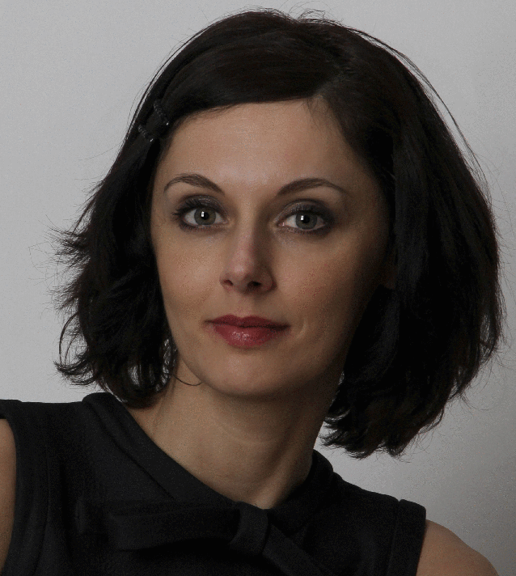

Motivation
It is becoming increasingly clear that future robotic systems will need to exhibit sophisticated assistive capabilities, highly tuned and responsive to the needs of human users. Whether on autonomous platforms or within personal computing systems, awareness of human intentions and requirements will be an essential attribute of any robotic system aiming to be genuinely useful. In essence, they will need to be capable of empathising with human behaviour if they are to be truly assistive in the fullest sense of the word.
Realising such cognitive assistive (CA) systems will require advances along the complete processing pipeline, from sensing through to learning and interaction. For instance, sensing will need to be proactive, anticipating user actions and environment changes to optimise data capture; whilst learning will need to exploit knowledge gained from observation of past actions and behaviours to predict likely human responses and reactions under different scenarios. During task-performance, assistive systems need to predict the perceptual changes that result as a consequence of human actions. These are challenging tasks which are likely to require step changes in current state of the art capability if they are to be addressed.
The aim of this workshop is to bring together researchers from relevant disciplines to exchange ideas and results on these and related tasks, as well as on the form of existing and future cognitive assistive systems. This will include those working in sensing, such as speech and vision, machine learning and AI, human computer interaction, biomechanics, and on systems and applications, including autonomous platforms, sensor networks and wearable computing, for example. One area in which CA systems are likely to have significant impact is in industrial manufacturing and training, and applications in this area will be of particular interest for this workshop.
Program
Sun Oct 7, 2012Room: Lince
| 08:30 - 08:40 | Introduction |
| 08:40 - 09:15 | Invited Speaker: Prof. Danica Kragic Extracting and representing relevant information from high-dimensional data |
| 09:15 - 09:50 | Invited Speaker: Dr. Jeremy Wyatt Active sensing and prediction in cognitive robots |
| 09:50 - 10:10 | Active Perception of Objects for Robot Grasping Joao Bimbo, Xiaojing Song, Hongbin Liu, Lakmal Senerivatne and Kaspar Althoefer, King's College London |
| 10:10 - 10:30 | A Preliminary Account of 3D Visual Search Fiora Pirri, Matia Pizzoli, and Arnab Sinha, Sapienza Università di Roma |
| 10:30 - 11:00 | coffee break |
| 11:00 - 11:35 | Invited Speaker: Prof. Yiannis Aloimonos Cognitive Robots with a minimalist action grammar: Theory and Applications |
| 11:35 - 11:55 | Decoupling behavior, control and perception in affordance-based manipulation Tucker Hermans, Jim Rehg and Aaron Bobick, Georgia Tech |
| 11:55 - 12:25 | Case Study: COGNITO - Cognitive Workflow Capturing and Rendering with On-Body Sensor Networks Gabriele Bleser and Ardhendu Behera |
| 12:25 - 14:00 | lunch break |
| 14:00 - 14:35 | Invited Speaker: Prof. Tamim Asfour Combining Active Vision and Active Touch for Grasping Unknown Objects |
| 14:35 - 15:10 | Invited Speaker: Dr. Claude Androit Immersive Virtual Manufacturing and Training with Haptic Feedback and Virtual Manikins |
| 15:10 - 15:30 | Symbiotic-Autonomous Service Robots for User-Requested Tasks in a Multi-Floor Building Manuela Veloso, Joydeep Biswas, Brian Coltin, Stephanie Rosenthal, Susana Brandao, Tekin Mericli and Rodrigo Ventura, Carnegie Mellon University |
| 15:30 - 15:50 | Multi-scale cortical keypoints for realtime hand tracking and gesture recognition Miguel Farrajota, Mário Saleiro, Kasim Terzic, João Rodrigues and Hans Du Buf, University of the Algarve |
| 15:50 - 16:30 | coffee break |
| 16:30 - 16:50 | Case Study: Closing The Action-Perception Loop at KTH Lazaros Nalpantidis, Geert Kootstra and Renaud Detry |
| 16:50 - 17:55 | Posters Session |
| 17:55 - 18:00 | Conclusion |
Online Proceedings
The online proceedings, including talk abstracts and accepted papers, can be downloaded from here
Invited Speakers
 |
Prof. Yiannis AloimonosDirector of the Computer Vision Laboratory,University of Maryland, USA |
|  | Prof. Danica KragicDirector of Centre for Autonomous Systems,KTH, Sweden |
 |
Dr. Jeremy WyattReader in Robotics and AI,University of Birmingham, UK |
 |
Prof. Tamim AsfourProfessor in Robotics,Karlsruhe Institute of Technology, Germany |
Dr. Claude AndriotResearch Engineer,CEA, France |
Call for Papers
The workshop will take place on October 7, 2012 in Vilamoura, Algarve, Portugal, proceeding the IEEE/RSJ International Conference on Intelligent Robots and Systems (IROS 2012). The organizers of the workshop warmly invite you to submit papers. The deadline for paper submission is 23:59 CET, August 2, 2012. Papers should describe novel work and assistive systems in one of the areas covered by the workshop. Topics include, but are not restricted to:- workspace mapping and sensor tracking
- real-time object localisation within cluttered environments
- upper body pose estimation and hand grips
- object grasping and manipulation
- supervised and unsupervised action learning for manipulation tasks
- real-time workflow monitoring and action recognition
- perceptual search and attention
- active perception
- multimodal perception
- providing feedback to human workers
All papers will undergo a single-blind peer-review process. All manuscripts will be reviewed by two reviewers, who will be selected among the members of the program committee. The authors will be notified whether they are accepted or not by August 10, 2012. The camera-ready versions of the accepted papers are due on August 31, 2012.
Accepted papers will either be selected for an oral presentation or for a poster presentation. In both cases, the accepted papers will be included in the proceedings, which will be publicly available through this website.
Papers should be formatted conforming the manuscript preparation guidelines, and should be 4-6 pages in length. Authors are encouraged to submit a live demo or a video showing their method.
Submission
Papers in pdf format should be submitted online via EasyChair. Pdf file size is limited to 10MB. Accompanying videos can also be uploaded via the submission system. We accept the following formats: MPEG-1 stream within a .MPG container, or MPEG-4 stream (H.264 recommended) within a .MP4 container. (MPEG format accepted - max file size 20MB).Key Dates
| Paper submission deadline [extended] | |
| Notification of acceptance | |
| Submission deadline of camera-ready version | |
| October 7, 2012 | Workshop |
Organisation
Workshop Organisers
Dima Damen, University of Bristol, UKGabriele Bleser, DFKI, Germany
Lazaros Nalpantidis, KTH, Sweden
Gert Kootstra, KTH, Sweden
Renaud Detry, KTH, Sweden
Ardhendu Behera, University of Leeds, UK
Luis Almeida, Centre for Computer Graphics, Portugal
Program Committee
Antonis Argyros, University of Crete, GreeceMårten Björkman, KTH Royal Institute of Technology, Sweden
Andrew Calway, University of Bristol, UK
Anthony Cohn, University of Leeds, UK
Yiannis Demiris, Imperial College London, UK
Sandeep Dubba, University of Leeds, UK
Jan-Olof Eklundh, KTH Royal Institute of Technology, Sweden
Antonios Gasteratos, Democritus University of Thrace, Greece
Andrew Gee, University of Bristol, UK
Marc Hanheide, University of Lincoln, UK
Carl Henrik Ek, KTH Royal Institute of Technology, Sweden
David Hogg, University of Leeds, UK
Koh Hosoda, Osaka University, Japan
Patric Jensfelt, KTH Royal Institute of Technology, Sweden
Pieter Jonker, Delft University of Technology, Netherlands
Sinan Kalkan, Middle East Technical University, Turkey
Dirk Kraft, University of Southern , Denmark
Norbert Krüger, University of Southern, Denmark
Frederic Marin, University of Technology of Compiègne, France
Hugo Marques, University of Zürich, Switserland
Walterio Mayol-Cuevas, Bristol Robotics Laboratory, UK
Giorgio Metta, IIT and University of Genova, Italy
Nicolas Pugeault, University of Surrey, UK
Norbert Schmitz, DFKI, Germany
Muralikrishna Sridhar, University of Leeds, UK
Didier Stricker, DFKI, Germany
Nicolas Vignais, University of Technology of Compiègne, France
Markus Vincze, Technische Universität Wien, Austria
Martijn Wisse, Delft University of Technology, Netherlands
Jeremy Wyatt, University of Birmingham, UK
Michael Zillich, Technische Universität Wien, Austria